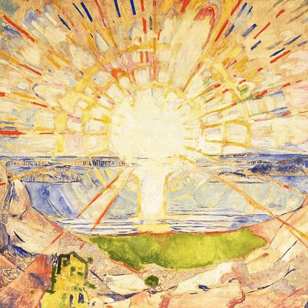

Hexagram 64 – Weiji: Open Possibility
Upper: Fire (☲) · Lower: Water (☵)

Core Meaning
The situation is not finished yet, and uncertainty remains. That is not failure; unfinished work still contains possibility. Do not rush or lose heart. Check your direction, move carefully, and finish one step at a time.
“I move carefully through what is unfinished and stay open to what can still grow.”
Blessing
May unfinished work never make you lose heart; the journey still holds possibility.
Guidance by Life Area
Love
The relationship is still taking shape. Do not force a conclusion; give both sides time to clarify what they want.
Do not force a conclusion:
- Give each other time to clarify.
- Leave room for development.
Career
The work is still in progress. Review your direction, adjust where needed, and avoid both rushing and giving up too early.
Review progress and direction:
- Adjust without rushing.
- Do not quit too early.
Health
Recovery or adjustment is still underway. Treat progress as a process and keep doing what supports steady improvement.
Treat change as a process:
- Keep doing what helps.
- Give recovery time.
Finances
Your financial plan is still developing. Review the setup, make measured adjustments, and avoid abandoning it out of impatience.
Review the current setup:
- Adjust carefully.
- Stay patient.
Relationships
Some relationships or collaborations are still unresolved. Leave room for them to develop and let time clarify the outcome.
Leave room for development:
- Do not force certainty.
- Let time clarify things.